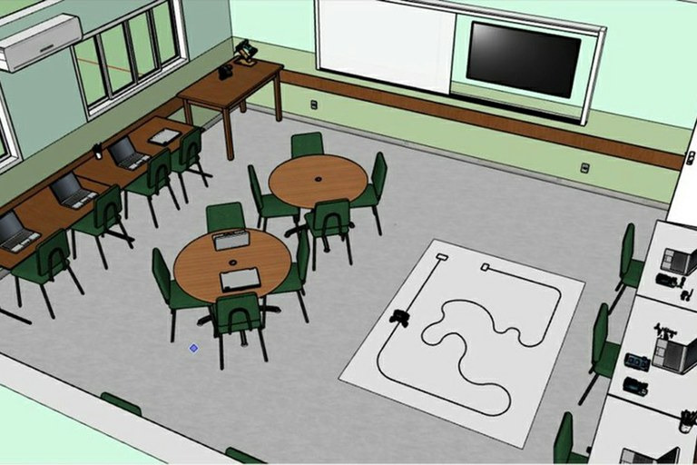

O IF Maker é um laboratório de prototipagem IFMaker com um edital de equipamentos, baseado no ensino Maker que visa a auxiliar os professores e técnicos-administrativos em educação no desenvolvimento da cultura learning by doing, icentivando a inovação e empreendedorismo a serviço do desenvolvimento.
